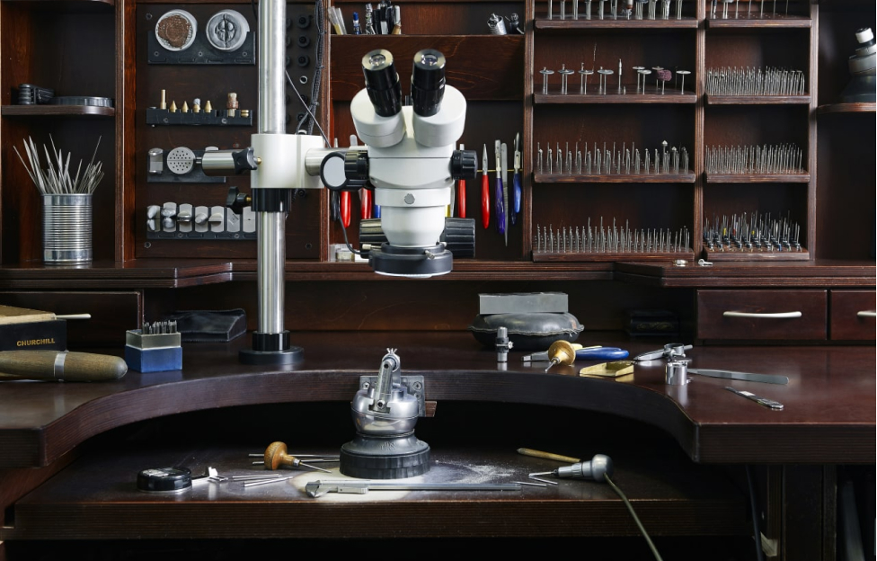
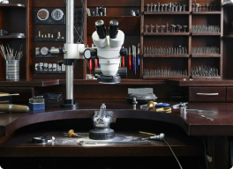

The art of jewellery making


Beautifully handcrafted in our Hatton Garden London studio, the Budrevich collection features timeless classics and bespoke designs using only the finest, ethically sourced GIA certified diamonds.
Whether you’re looking for a classic solitaire or a shimmering halo, we can help you create the perfect proposal with a truly personal, handmade engagement ring.
- engagement rings

- solitaire rings
- halo rings
- three stone rings
- diamond set band rings
- wedding rings
- earrings
- guides & articles
- design process
- reviews
- contact us

The art of jewellery making
design process
We are Budrevich, a fine jewellery studio based in Hatton Garden, the heart of the British
jewellery industry. For years, we have offered the highest quality of handcraftsmanship, and we
are regularly called upon to make jewels for some of the most respected high jewellery houses in
Europe. Now, we invite you to experience our bespoke service.
Discover beautiful treasures, crafted by our skilled craftspeople in our London workshop —
precious jewels and exquisite engagement rings that are soft to the touch yet sharp to the eye.
1. exceptional attention to detail
We know that making great-looking jewellery is only possible when every element, however small, is respected and perfected, which is why we have filled our studio with the latest jewellery-making tools and technology. Each of our benches is fitted with optics, allowing our craftspeople to work under magnification up to 70x, and an optical laser welder to join microscopic pieces with absolute precision. This is how we achieve the sharp lines, seamless soldering and stunning diamond setting that are all signatures of a Budrevich jewel.
2. high-quality materials
We never compromise on our materials, sourcing only the finest for our jewels. All of our stones are uniformly exceptional in quality, perfectly calibrated to create continuous rows of diamonds that are smooth to the touch, and we work exclusively with fresh metals, set with melée diamonds starting from 0.6 mm upwards, to avoid the blemishes that arise from using inferior-quality metals. This commitment to using the very best materials enables us to realise the clean, architectural lines that make our jewels a joy to look at and a pleasure to wear.
3. unique, handcrafted jewels
We specialise in creating bespoke jewels, individually crafted in our workshop. Every creation, no matter how simple, is realised by hand as we refuse to settle for pre-made mounts or haphazard stone setting. Having full control over the process enables us to guarantee the quality of our jewels and helps us keep designs consistent, with each in-house craftsman communicating with the next, ensuring that the original idea is executed to the highest standard.
4. communication between client and craftsman
Years of working in the trade, crafting jewellery for different boutiques, has made it very clear that even the most skilled salespeople have no practical jewellery-making knowledge, which is absolutely essential when it comes to creating a bespoke jewel. To ensure a perfectly constructed and well-proportioned piece, a much higher level of detail must be communicated. To ensure there is no loss of information from client to salesperson to craftsman, our bespoke appointments are handled exclusively by the skilled artisans who will work on your jewel throughout. This cuts out the middleman and allows you to rest easy knowing that your bespoke creation will be crafted in a structurally sound and aesthetically pleasing way, without wasting time on unnecessary remakes.
5. complete transparency
During your appointment, we will invite you to browse diamonds selected to suit your budget and specifications. Each stone is GIA graded and comes with a certificate and unique GIA number engraved on the girdle (outer edge). We encourage you to look at each of the options under a gemmological microscope to gain a better understanding of the 4Cs of diamond grading that together affect the value of your stone. By experiencing diamonds up close, you will be better equipped to compare the features and pick your favourite. When it comes to pricing, we are transparent from the very beginning. We don’t believe in adding a little extra in order to give artificial discounts, and you will never receive an unwelcome surprise in the form of hidden costs or added VAT once your bespoke jewel is completed.

6. free five-year after-sales service
Many of our clients enjoy the romance of a surprise proposal, and we are committed to helping you keep it that way. We have every trick in the book to help you estimate the approximate ring size of your partner and offer a complimentary ring resizing service for after the event, just in case. As part of our complimentary five year after-sales service, we recommend that every client returns their Budrevich jewel to us annually for a clean, polish and professional check. To ensure you don’t forget, after 12 months we will send you a reminder email.
Engagement rings, in particular, are so much more precious when the design comes from the heart, not off the shelf. With a bespoke engagement ring, you are putting some of your essence into the piece, and this is where we can help. Designed to be an enjoyable experience throughout, you are front and centre in the creation process from the very start. Our bespoke service begins with a conversation to get a general idea of what you are looking for and establish an approximate budget that will allow us to prepare a selection of stones and samples prior to your visit. Next, you are invited for a meeting with the Budrevich team, which is an opportunity for you to show us any drawings or pictures you may have and discuss ideas and inspirations. Once you have decided on a design, we use CAD technology to create a precise render of how it will look, which is printed and posted for you to sign off. For the most complex creations, we create a perfect wax replica of the jewel using a 3D printer to accompany the CAD design. Only once you have signed off the design do we begin making your bespoke ring.
Our Philosophy
Our work represents more than just our living — it means everything to us. We make fine jewellery that lasts a lifetime — pieces that celebrate life’s special moments that you will want to have close by, always — and treat our clients as guests, providing direct craftsman-to-client communication through a bespoke jewellery service that is second to none. We design with gold, platinum and diamonds but understand that your trust is more valuable than even the most precious of materials, which is why we always go the extra mile to make sure you are happy with your purchase. Call us sentimental, but we believe that the uniqueness of a jewel makes the events and occasions they represent that much more significant.
In The Heart of Hatton Garden
In The Heart of Hatton Garden
We invite you to visit us at our studio in Hatton Garden, London, and experience the world of
Budrevich first-hand.
Discover how we can create a bespoke jewel for you or your
partner and
meet the talented artisans who handcraft every Budrevich creation in our state-of-the-art
workshop.

All in the Detail
From the moment you arrive for your first appointment to the completion of a jewel, our bespoke
service is designed to put you at ease and welcome you into our world.
During your
appointment
you will get to speak directly to the artisan who will be creating your bespoke piece and, after
your jewel has been made, we share photographs of the craftsmanship process — a unique memento
of your experience with us.
Passionate About Our Craft
Our approach to jewellery making is uncompromising: we won’t settle for anything but the best.
Designed to last a lifetime, every Budrevich jewel is crafted by hand to the highest standards
and never leaves our hands until we have achieved perfection.
Passionate About Our Craft
From the moment you arrive for your first appointment to the completion of a jewel, our bespoke
service is designed to put you at ease and welcome you into our world.
During your
appointment
you will get to speak directly to the artisan who will be creating your bespoke piece and, after
your jewel has been made, we share photographs of the craftsmanship process — a unique memento
of your experience with us.

In The Heart of Hatton Garden
We invite you to visit us at our studio in Hatton Garden, London, and experience the world of
Budrevich first-hand.
Discover how we can create a bespoke jewel for you or your
partner and
meet the talented artisans who handcraft every Budrevich creation in our state-of-the-art
workshop.
All in the Detail
From the moment you arrive for your first appointment to the completion of a jewel, our bespoke
service is designed to put you at ease and welcome you into our world.
During your
appointment
you will get to speak directly to the artisan who will be creating your bespoke piece and, after
your jewel has been made, we share photographs of the craftsmanship process — a unique memento
of your experience with us.
Passionate About Our Craft
Our approach to jewellery making is uncompromising: we won’t settle for anything but the best.
Designed to last a lifetime, every Budrevich jewel is crafted by hand to the highest standards
and never leaves our hands until we have achieved perfection.
Your Invitation
Meet with a member of the Budrevich team to discuss your bespoke needs.
Join us on Instagram